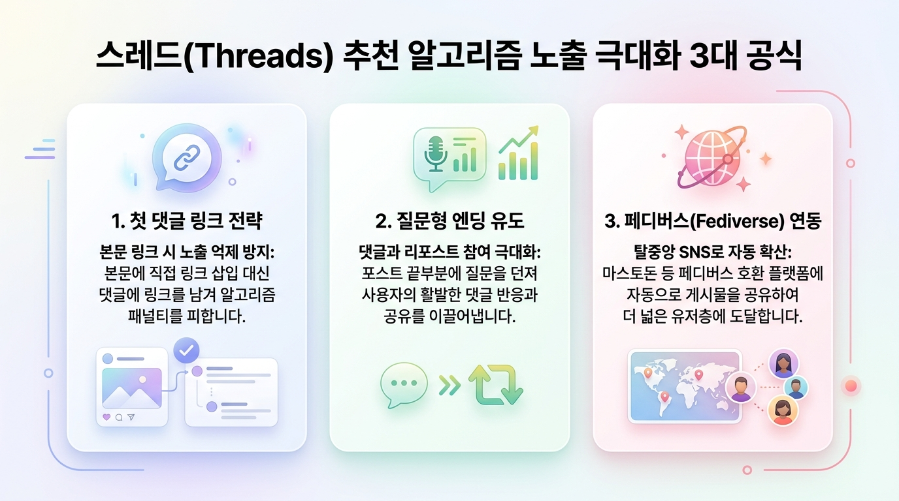
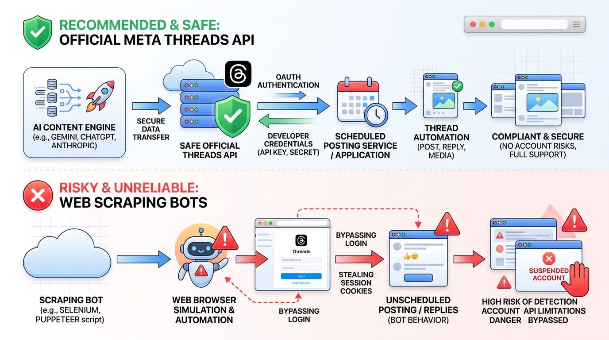

신규 계정 생성 및 핵심 세팅 꿀팁
기존 계정(A)이 있는 상태에서 신규 계정(B)을 독립적으로 생성하고 보안 및 API 연동을 대비하는 방법입니다.
▲ [단계별 흐름] 신규 인스타그램 가입 ➔ 3~5일간 수동 웜업 ➔ 안전한 API 연동 완료
| 구분 항목 | 재사용 / 설정 여부 | 상세 가이드 및 권장 사항 |
|---|---|---|
| 인스타 계정(B) 추가 | ● 가능 (최대 5개) | 인스타그램 앱은 단일 기기에서 최대 5개 계정의 간편 전환을 기본 지원합니다. |
| 전화번호 재사용 | ● 재사용 가능 | 기존 A 계정에 등록된 휴대폰 번호로 B 계정 본인인증을 받아도 정상 통과됩니다. |
| 이메일 주소 | ▲ 별도 이메일 필요 | 동일 이메일 재가입 시 기존 계정 병합 안내가 뜸. Gmail 별칭(Alias) 사용 권장. |
| 계정 유형 | 프로페셔널 계정 전환 | 크리에이터/비즈니스 계정 전환 시 Meta Developer API 연동 및 도달 분석 지원. |
| 2단계 인증 (2FA) | 인증 앱(OTP) 권장 | SMS 대신 Google Authenticator/1Password 등록 시 봇 오인 잠김을 즉각 해결 가능. |
Gmail 별칭(Alias) 활용 꿀팁
새 이메일을 따로 만들지 않고 기존 Gmail에
+ 태그를 붙여 독립 계정으로 가입할 수 있습니다.
- 기존 이메일:
myname@gmail.com - 새 계정 가입 이메일:
myname+threads@gmail.com - 인증 메일은 원래 Gmail 수신함으로 오며, 인스타는 완전히 새로운 이메일로 인식합니다.
Meta 계정 센터 연동 분리 주의
인스타그램 앱에서 새 계정 생성 시 "기존 계정과 로그인 공유" 팝업이 뜹니다.
- "새로운 독립 아이디/비밀번호로 가입"을 선택하세요.
- 나중에 Meta 개발자 센터에서 Threads 토큰을 분리해서 발급받을 때 훨씬 편리합니다.
차단·정지 방지를 위한 '계정 웜업(Warm-up)'
신규 계정 생성 직후 자동화 API나 대량 포스팅을 붙이면 90% 이상 확률로 스팸 봇으로 분류되어 정지(Shadowban)됩니다. 3~5일간의 웜업이 필수입니다.
주의: 새 계정에 즉시 대량 자동 글 작성 금지
메타의 AI 스팸 감지 시스템은 프로필 완성도, 이전 활동 이력, 인간다운 브라우징 패턴을 검사합니다. 초기 웜업 없이 자동 게시를 시작하면 계정이 영구 정지될 수 있습니다.
메타의 AI 스팸 감지 시스템은 프로필 완성도, 이전 활동 이력, 인간다운 브라우징 패턴을 검사합니다. 초기 웜업 없이 자동 게시를 시작하면 계정이 영구 정지될 수 있습니다.
1. 프로필 완성
- 고화질 프로필 사진 업로드
- 스레드 전용 한 줄 소개(Bio) 작성
- 카테고리/관심사 태그 설정
- 초기 일상/생각 글 1~2개 직접 수동 작성
2. 자연스러운 탐색
- 관련 분야 글 5~10개 직접 읽기
- 마음에 드는 글에 좋아요 2~3회
- 정상적이고 성의 있는 댓글 1~2개
- 단기간 대량 팔로우 절대 금지
3. 정상 네트워크 환경
- VPN, 무료 프록시 사용 절대 금지
- 본인이 원래 사용하던 LTE/5G 모바일 데이터나 가정용 Wi-Fi에서 진행
- 의심스러운 IP 대역 감지 방지
웜업 5일 표준 스케줄 표
| 일차 | 권장 활동 내용 | 금지 사항 |
|---|---|---|
| Day 1 | 계정 생성, 프로필 사진 및 소개글 완성, 첫 일상 글 1개 수동 게시 | 외부 링크 포스팅, 팔로우 10명 이상 |
| Day 2 | 추천 피드 글 10개 열람, 좋아요 3개, 공감 댓글 1개 작성 | 자동화 API 테스트 호출 |
| Day 3 | 관심사 관련 본인 생각 글 1개 작성 (질문형), 맞팔 소통 | 단기간 연속 포스팅 |
| Day 4 | Meta for Developers 가입 및 스레드 앱 생성 (기본 권한) | 비공식 웹 매크로 스크립트 실행 |
| Day 5 | 공식 Threads API 기반으로 하루 1회 테스트 포스팅 시작 (시간 랜덤 분산) | 정각 칼송신 (09:00:00 등) |
스레드(Threads) 알고리즘 노출 극대화 전략
스레드는 트위터/인스타그램과 다른 고유의 추천 알고리즘을 가집니다. 도달률을 5배 이상 높이는 핵심 공식입니다.

▲ [알고리즘 3대 공식] ① 첫 댓글 링크 전략 ② 질문형 엔딩 유도 ③ 페디버스(Fediverse) 연동
1. 첫 댓글 링크 전략
본문에 외부 링크(블로그, 유튜브, 상품 링크)가 있으면 알고리즘이 노출을 대폭 억제합니다.
해결책: 본문에는 인사이트 요약 텍스트만 올리고,
해결책: 본문에는 인사이트 요약 텍스트만 올리고,
"자세한 링크는 첫 번째 댓글에 남겨둘게요!"라고 안내 후 첫 대댓글에 링크를 첨부하세요.
2. 질문 던지기 엔딩
스레드 For You 탭은 '댓글 수'와 '리포스트(재게시)' 점수가 가장 높습니다.
팁: 모든 AI 생성 글의 마지막 문장을 대화를 유도하는 질문으로 끝나도록 프롬프트를 구성하세요. (예: "여러분은 어떤 방법을 더 선호하시나요?")
팁: 모든 AI 생성 글의 마지막 문장을 대화를 유도하는 질문으로 끝나도록 프롬프트를 구성하세요. (예: "여러분은 어떤 방법을 더 선호하시나요?")
3. 페디버스(Fediverse) 켜기
스레드 설정에서 '페디버스 공유'를 활성화하면 마스토돈 등 오픈 SNS 연합망 사용자들에게도 내 글이 노출되고 팔로우될 수 있습니다.
추가적인 도달 범위와 검색 유입을 무료로 확보할 수 있습니다.
추가적인 도달 범위와 검색 유입을 무료로 확보할 수 있습니다.
AI 프롬프트 작성 꿀팁:
"전문 용어를 너무 어렵게 쓰지 말고, 친구에게 커피 마시며 말하듯 편안한 구어체(~해요, ~더라고요)로 3~5줄로 간결하게 작성하고, 마지막 줄단에는 반드시 독자의 의견을 묻는 질문을 넣어줘."
"전문 용어를 너무 어렵게 쓰지 말고, 친구에게 커피 마시며 말하듯 편안한 구어체(~해요, ~더라고요)로 3~5줄로 간결하게 작성하고, 마지막 줄단에는 반드시 독자의 의견을 묻는 질문을 넣어줘."
안전한 AI 자동화 구축 파이프라인
계정 정지 위험이 있는 웹 매크로를 배제하고, 공식 Meta Threads API와 Google Gemini / OpenAI를 연결하는 안전한 아키텍처입니다.

▲ [보안 비교] 안전 및 공식 추천: 메타 공식 스레드 API vs 위험 및 계정 정지: 웹 매크로 스크래핑 봇
방법 1. Python + GitHub Actions (완전 무료)
서버 유지비 없이 100% 무료로 운영 가능한 최고의 방식입니다.
- AI 글 생성: Google Gemini API (무료 플랜 넉넉함)
- 자동 포스팅: 공식 Threads API 2단계 엔드포인트 호출
- 스케줄러: GitHub Actions Cron (매일 원하는 시간에 자동 실행)
- 랜덤 시간 지터:
time.sleep(random.randint(60, 600))적용으로 정각 기계적 포스팅 회피
방법 2. 노코드 툴 (Make / Zapier / n8n)
코딩 없이 마우스 드래그 앤 드롭으로 1시간 내에 구축하는 방식입니다.
- 주제 DB: 구글 시트 또는 노션에 관심 주제 리스트업
- AI 모듈: Make의 OpenAI / Gemini 모듈로 프롬프트 전송
- 게시 모듈: Make의 HTTP 모듈로 Threads Graph API 전송
- 시각적인 워크플로우로 비개발자도 손쉽게 수정 가능
공식 Threads API 2단계 포스팅 파이썬 코드 예시
공식 Threads API는 ① 컨테이너 생성 ➔ ② 컨테이너 게시의 2단계로 진행됩니다.
python • threads_api_post.py
import requests
import time
THREADS_USER_ID = "YOUR_THREADS_USER_ID"
ACCESS_TOKEN = "YOUR_LONG_LIVED_ACCESS_TOKEN"
def post_to_threads(text_content):
# Step 1: 미디어 컨테이너 생성
creation_url = f"https://graph.threads.net/v1.0/{THREADS_USER_ID}/threads"
payload = {
"media_type": "TEXT",
"text": text_content,
"access_token": ACCESS_TOKEN
}
res = requests.post(creation_url, data=payload).json()
container_id = res.get("id")
if not container_id:
print("컨테이너 생성 실패:", res)
return False
time.sleep(5) # 처리 대기
# Step 2: 스레드 발행 (Publish)
publish_url = f"https://graph.threads.net/v1.0/{THREADS_USER_ID}/threads_publish"
publish_payload = {
"creation_id": container_id,
"access_token": ACCESS_TOKEN
}
pub_res = requests.post(publish_url, data=publish_payload).json()
print("스레드 게시 성공 ID:", pub_res.get("id"))
return True
단계별 인터랙티브 실행 체크리스트
계정 생성부터 자동화 활성화까지 체크하며 진행해 보세요. 브라우저에 저장됩니다.